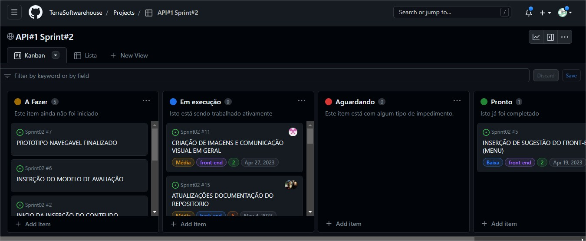

Foram feitas as anotações referente a avaliação do grupo na apresentação da Sprint1 de forma a ficar clara as pontuações para todos os integrantes e serem aplicadas as devidas correções.
Pontuações Sprint1
Após a reunião da Sprint Review referente a Sprint I (13/04/2023) e definição das dificuldades encontradas na primeira sprint, foi decidida a mudança do kanban do trello para o Git Hub.

Kanban-Git Hub
Detalhamento DoR and DoD - Kanban Conheça aqui o site da Terra Softhouse.
Design
A equipe de design iniciou a busca por referências de páginas de apresentação de equipes, plataformas de apresentação de conteúdos esteticamente agradáveis e referências de formatos adaptáveis de Layout para as apresentações.
Após, foi feito o desenvolvimento do primeiro modelo para a página de apresentação da equipe.
Front-end
Foi feita uma pesquisa para deixar o site responsivo e o início dos testes usando o bootstrap.
A equipe de front encontrou dificuldade no uso do bootstrap e focou no estudo do mesmo para dar continuidade no processo. Foram feitos os ajustes do CSS e tela principal e os ajustes dos módulos na página principal.
Módulos - início
A página responsiva ficou pronta e foram adicionados os links, ficando preparada para receber o conteúdo.
Site - responsivo
Módulos - responsivo
Foi feito o layout da página de avaliação com bootstrap.
Foi feito um controle mais lúdico (utilizando as cores de cada um) de presença com o objetivo da equipe visualizar quanto tempo faltava para terminar o prazo e se reorganizar, caso necessário, a fim de cumprir as atividades dentro do prazo.
Controle de Presença
História de usuário (User Storie)
A História de usuário (User Storie) foi feita com o intuito de atender as expectativas dos envolvidos na avaliação do projeto.
História de usuário (User Storie)